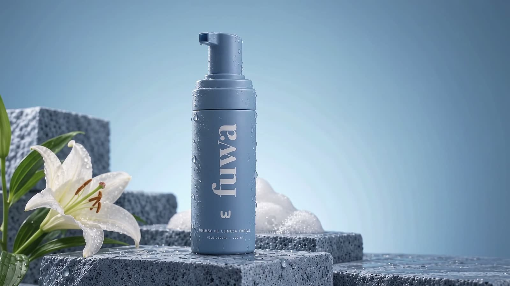
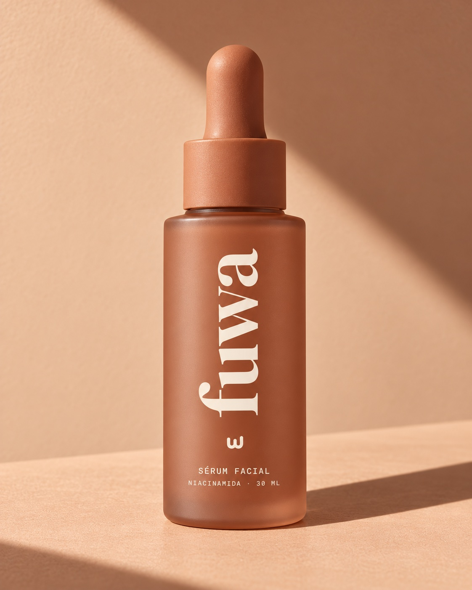
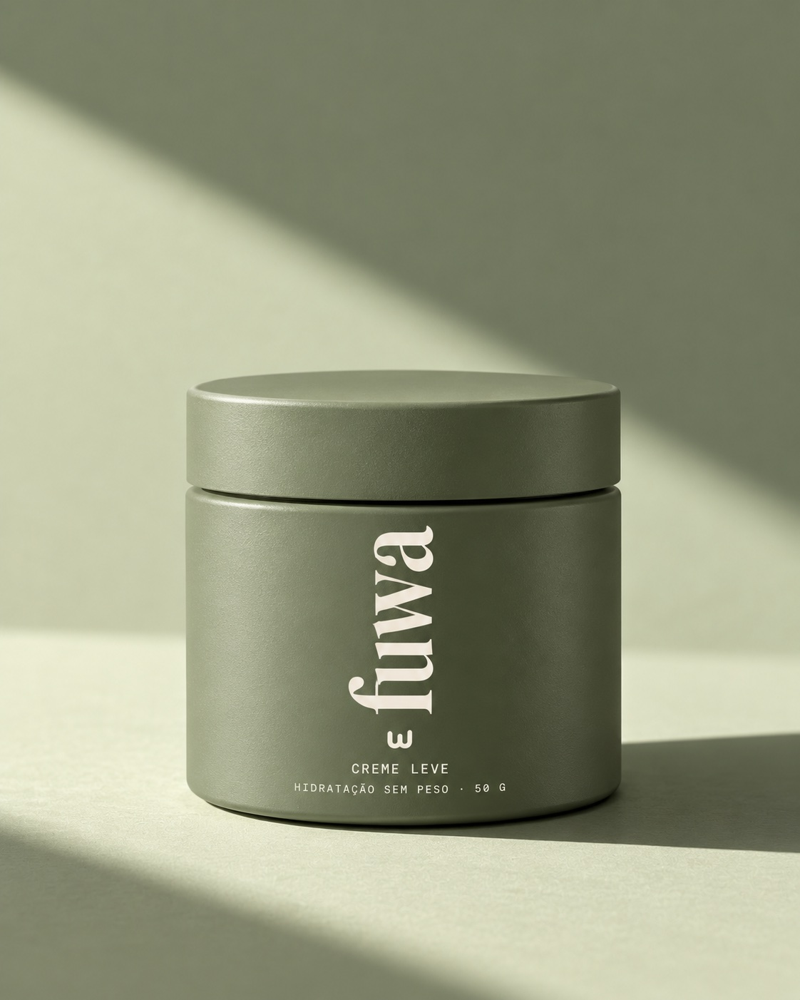
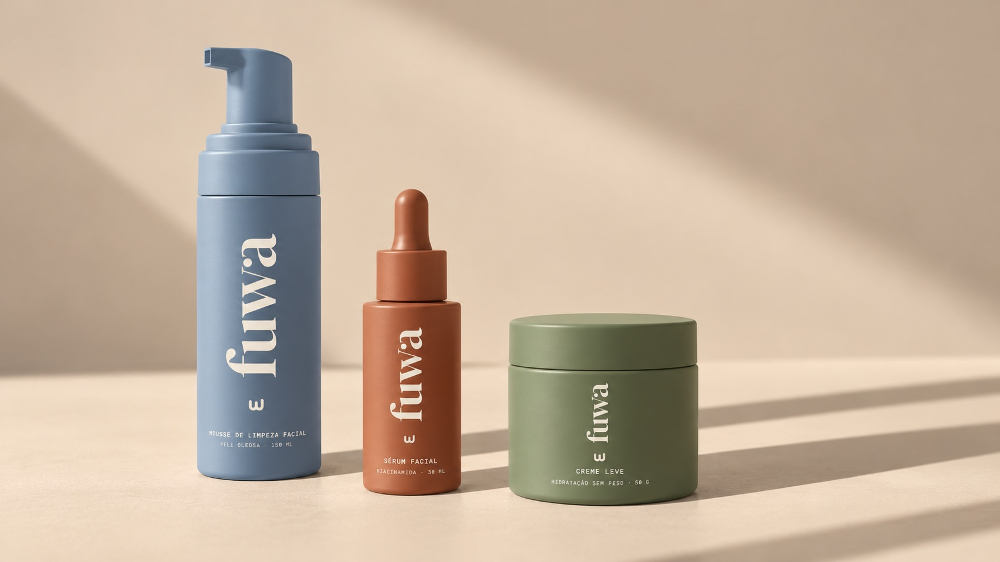

faz
limpa o excesso de oleosidade e a sujeira do dia, sem deixar a sensação de pele esticada.
um pump.
espuma pronta.
limpeza que começa
leve.
macia na mão.
sem esfregar.
leve como deveria
ser.
lavou.
não repuxou.
um peso
a menos.
pele oleosa não precisa de guerra.
precisa de leveza.
Dez passos. Ácido que arde. Linguagem de guerra contra a pele oleosa.
Mas cuidar não precisa parecer uma prova. Nem deixar a pele pedindo desculpa por existir.
Limpeza, não castigo.

Um pump. Espuma pronta. Para pele oleosa e mista que quer limpeza sem repuxar.
limpa o excesso de oleosidade e a sujeira do dia, sem deixar a sensação de pele esticada.
não trata acne, não cura, não apaga marcas. um sabonete não precisa prometer o mundo.
ふわふわ quer dizer leve, macio, fofinho. Em japonês.
Fuwa se fala fu·ua. E, se alguém perguntar, é fuwa, não fuá.



Entre na lista e receba o aviso de lançamento da mousse Fuwa.